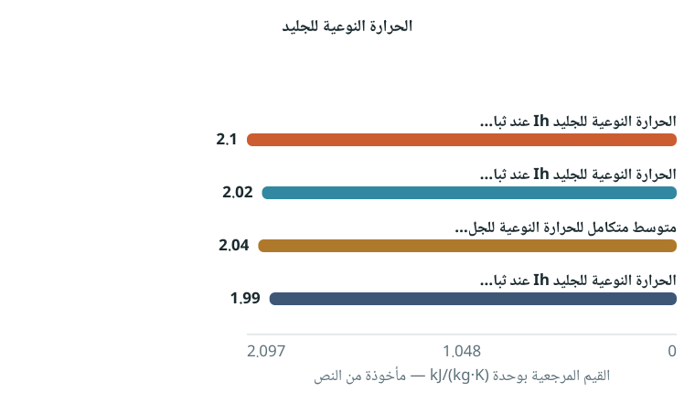

الحرارة النوعية للجليد
Specific Heat of Ice
الحرارة اللازمة لرفع درجة حرارة كيلوغرام من الجليد درجة واحدة. تساوي 2.0967 kJ/(kg·K) عند 0 °م و2.0231 عند −10 °م.
الحرارة النوعية للجليد Ih عند ثبات الضغط تُحسب من معادلة الحالة IAPWS R10-06(2009) بالمعادلة (6): c_p = −T·g_TT، وهي معادلة حالة لا صيغة مسعرية مرقّمة. القيم عند ضغط 101325 Pa: 2.0967 kJ/(kg·K) عند 0 °م، و2.0231 عند −10 °م، و1.9864 عند −15 °م. وتنص IAPWS أن عدم اليقين المنشور 2% عند T ≤ 273 K وp ≤ 0.1 MPa. ولأن القيمة تتغير 5.6% بين −15 و0 °م، فإن استخدام قيمة واحدة لتسخين الجليد من −15 إلى 0 °م يقتضي إعلان أنها متوسط متكامل لا قيمة عند ظرف؛ والمتوسط المتكامل على هذا النطاق 2.0415 kJ/(kg·K).
كيف تعمل الظاهرة؟
الحرارة النوعية للجليد Ih عند ثبات الضغط تُحسب من معادلة الحالة IAPWS R10-06(2009) بالمعادلة (6): c_p = −T·g_TT، حيث g دالة جيبس النوعية للجليد. فهي معادلة حالة لا صيغة مسعرية مرقّمة، وتشتق من المشتقة الثانية لدالة جيبس بالنسبة لدرجة الحرارة. وترتفع القيمة مع اقتراب الحرارة من نقطة الانصهار لأن الاهتزازات الشبكية تتسع.
العلاقة بالأرقام
عند ضغط 101325 Pa: 2.0967 kJ/(kg·K) عند 0 °م، و2.0231 عند −10 °م، و1.9864 عند −15 °م. والمتوسط المتكامل على −15..0 °م يساوي 2.0415 kJ/(kg·K). والتغيّر بين −15 و0 °م 5.6%. وعدم اليقين المنشور 2% عند T ≤ 273 K وp ≤ 0.1 MPa. وتسخين 1 kg جليد من −15 إلى 0 °م يحتاج نحو 30.6 kJ.
مفاهيم متقاربة
الحرارة النوعية للجليد تختلف عن الحرارة النوعية للماء السائل: الجليد نحو نصفها، ولهذا يتغير ميل منحنى التسخين عند الانصهار. وتختلف عن الحرارة الكامنة للانصهار: الكامنة طاقة تغيير الطور عند 0 °م دون رفع الحرارة، والحرارة النوعية طاقة رفع الحرارة داخل طور الجليد. ولا تُستخدم قيمة واحدة كثابت على نطاق واسع، لأن التغيّر 5.6% بين −15 و0 °م.
حدود التطبيق
القيم خاصة بطور الجليد Ih عند ضغط 101325 Pa، ولا تصلح لأطوار الجليد الأخرى كـII أوIII أوV التي تظهر عند ضغوط أعلى. ونطاق الصلاحية T ≤ 273 K وp ≤ 0.1 MPa. واستخدام قيمة واحدة لتسخين الجليد من −15 إلى 0 °م يقتضي إعلان أنها متوسط متكامل لا قيمة عند ظرف.

| الكمية | القيمة | المصدر |
|---|---|---|
| الحرارة النوعية للجليد Ih عند ثبات الضغط c_p عند 0 °م و101325 Pa | 2.0967 kJ/(kg·K) | [1] |
| الحرارة النوعية للجليد Ih عند ثبات الضغط c_p عند −10 °م و101325 Pa | 2.0231 kJ/(kg·K) | [1] |
| متوسط متكامل للحرارة النوعية للجليد Ih على نطاق −15 إلى 0 °م عند 101325 Pa | 2.0415 kJ/(kg·K) | [1] |
| الحرارة النوعية للجليد Ih عند ثبات الضغط c_p عند −15 °م و101325 Pa | 1.9864 kJ/(kg·K) | [1] |
| نسبة تغيّر c_p للجليد بين −15 °م و0 °م | 5.6 % | [1] |
| عدم اليقين المنشور النسبي u_c(c_p)/c_p للجليد عند T ≤ 273 K وp ≤ 0.1 MPa | 2 % | [1] |
المصادر
- 1 Revised Release on the Equation of State 2006 for H2O Ice Ih (R10-06(2009)) — IAPWS — International Association for the Properties of Water and Steam (2009). iapws.org/technical-guidance/release/Ice-2009 · اطُّلع عليه 2026-11-21
- 2 A New Equation of State for H2O Ice Ih — Journal of Physical and Chemical Reference Data (2006). · اطُّلع عليه 2026-11-21
استشهد بهذا المصطلح
الصيغتان مبنيتان من بيانات الصفحة نفسها: العنوان والتاريخ ورابط النسخة المنشورة.
الحرارة النوعية للجليد — Specific Heat of Ice. (2026). ديوان المعرفة — انفراد. https://infiradev.com/diwan/terms/term-specific-heat-ice.html
@misc{term-specific-heat-ice2026,
title = {الحرارة النوعية للجليد},
titleaddon = {Specific Heat of Ice},
howpublished = {{ديوان المعرفة — انفراد} — مرجع علمي عربي},
year = {2026},
url = {https://infiradev.com/diwan/terms/term-specific-heat-ice.html},
urldate = {2026-11-25},
note = {مراجعة علمية: فحص التسليم — مراجعة المدير}
}
راجعه: فحص التسليم — مراجعة المدير · 2026-11-25 · آخر تحديث 2026-11-21